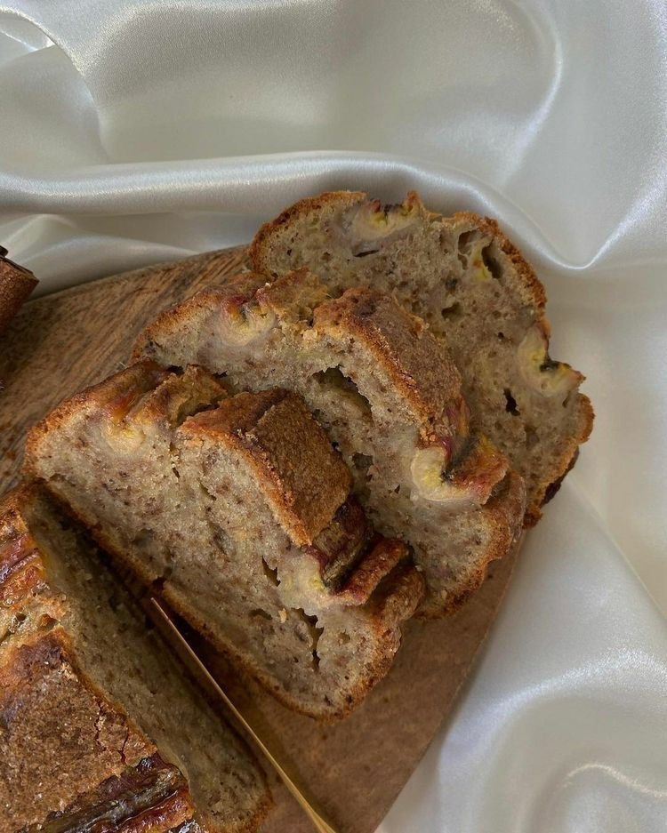

Brown Butter Chocolate Chip Cookies
Jump to RecipeThere’s something magical about brown butter — the way it transforms ordinary cookies into something deeply nutty, rich, and almost caramel-like. These brown butter chocolate chip cookies have crisp golden edges, soft chewy centers, and pools of melted chocolate in every bite. They feel nostalgic, but just a little elevated.

Why brown butter makes a difference
Browning butter cooks out excess moisture and toasts the milk solids, creating a nutty, almost toffee-like flavor. It adds depth without adding extra ingredients, making these cookies taste bakery-worthy with minimal effort.
The secret to chewy centers
A higher ratio of brown sugar to white sugar keeps the cookies moist and chewy. Slightly underbaking them also ensures soft centers that stay tender even after cooling.
Do you need to chill the dough?
Yes! Chilling allows the flour to hydrate and the flavors to deepen. Even 30–60 minutes makes a difference, but overnight chilling creates even richer flavor and thicker cookies.
How to get those bakery-style pools of chocolate
Instead of chocolate chips, try roughly chopped chocolate bars. The uneven pieces melt into glossy puddles that look as good as they taste.
Ingredients
- Unsalted Butter (1 cup / 225g): Browned for deep, nutty flavor.
- Granulated Sugar (½ cup / 100g) & Brown Sugar (1 cup / 200g): This combination adds sweetness with a subtle caramel depth from the brown sugar.
- 1/4 cup (50 g) brown sugar
- Eggs (2 large, room temperature): Binds the ingredients together and gives the cookie structure./li>
- Vanilla Extract (2 teaspoons): Deepens and enhances the chocolate flavor.
- Baking Soda (1 teaspoon)
- Fine Sea Salt (¾ teaspoon)
- All-Purpose Flour (2½ cups / 315g): I use standard all-purpose flour for a classic texture.
How To
- Brown butter in a saucepan until golden and nutty; let cool slightly.
- Whisk butter with sugars until combined.
- Add eggs and vanilla, mixing well.
- Stir in flour, baking soda, and salt. Fold in chocolate.
- Chill dough 30–60 minutes.
- Scoop onto lined baking sheets and bake at 350°F for 10–12 minutes.
- Cool slightly before enjoying.